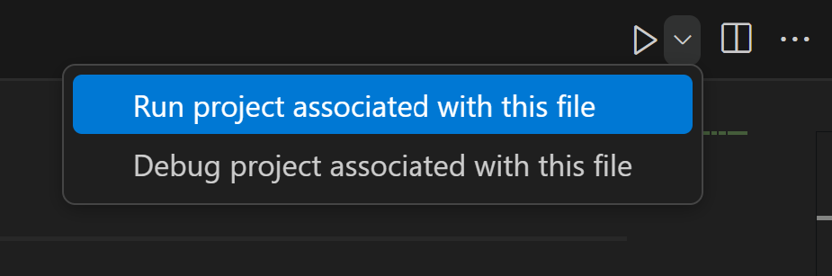

Este ejercicio va a servir para familiarizarse con la creación de proyectos, tanto desde consola como con la ayuda de la extensión. Para ello se crearán dos proyecto de C#, el primero mediante la consola y el segundo desde VSCode con la extensión C# Dev kit.
Mediante Consola. Primero abre el tema por la parte Creación desde la línea de comandos (CLI) y apóyate en los apuntes para realizar los siguientes pasos:
Vas a crear un proyecto de consola mediante la línea de comandos [CMD] de Windows. Primero deberás situarte en una ruta que consideres y crear una carpeta para que contenga el proyecto llamada MisProyectosConsola. El proyecto se llamará MiPrimerProyecto y lo crearas con el comando indicado en los apuntes.
dotnet new console -n MiPrimerProyecto
Revisa los ficheros y carpetas que se han creado y localiza el fichero de proyecto, extensión .csproj.
Abre el fichero y compáralo con el de los apuntes, comprobando si hay alguna diferencia e intentando comprender la utilidad de las etiquetas.
Sigue revisando el contenido de los elementos creados y localiza el fichero donde se encuentra el código fuente .cs
Abre ese fichero y cambia el "Hello Word" por "Mi Primer Proyecto".
Ahora vamos a crear una solución para añadir nuestro proyecto a ella.
dotnet new sln -n MiPrimeraSolucion
Añadiremos nuestro proyecto a la solución con
dotnet sln MiPrimeraSolucion.sln add ./MiPrimerProyecto/MiPrimerProyecto.csproj
Revisa otra vez los ficheros generados y localiza la solución .sln. Abre la solución y revisa en que línea aparece añadido tu proyecto a la solución.
Si queremos ver el resultado de la ejecución de nuestro proyecto, desde la línea de comandos y situado en la carpeta donde esta el proyecto, ejecutaremos.
dotnet run
Mediante la extensión C# Dev Kit de VS Code. Ahora vas a crear otros proyectos pero con la ayuda de la extensión. Como soporte ves a la parte de los apuntes Creando una solución desde VS Code
MisProyectosVSCode, abriremos la carpeta con File -> Open FolderCtrl + Shift + P ó con View -> Command Palette.Net: New Project y seguiremos los pasos indicando que es un proyecto de consola Console App, el nombre del proyecto MiSegundoProyecto y la carpeta donde guardarlo (se puede dejar por defecto), se selecciona tipo de solución .sln y pasaremos a crear el proyecto..csproj y los .csMiTercerProyecto..cs del proyecto que queramos ejecutar y pulsar sobre la opción siguiente del menú desplegable del play. Este ejercicio ya no será tan guiado porque se tratará de poner en practica los conocimientos adquiridos en el anterior ejercicio. Nos situaremos en la carpeta MisProyectosConsola y con los comandos de consola añadiremos un nuevo proyecto llamado MiCuartoProyecto. Pasaremos a VSCode y abriremos esta carpeta. Investigaremos el archivo de soluciones .sln para ver si se ha incluido el último proyecto a la solución. Si no se ha incluido, investiga la manera de hacerlo mediante el entorno. Modificaremos los mensajes de los códigos .cs y ejecutaremos cada uno de los ficheros .cs como se ha indicado en el anterior ejercicio.
Descarga del siguiente enlace compilar_proyecto un proyecto creado. Ábrelo con el Visual Code y ejecútalo para interactuar con el y ver las salidas.